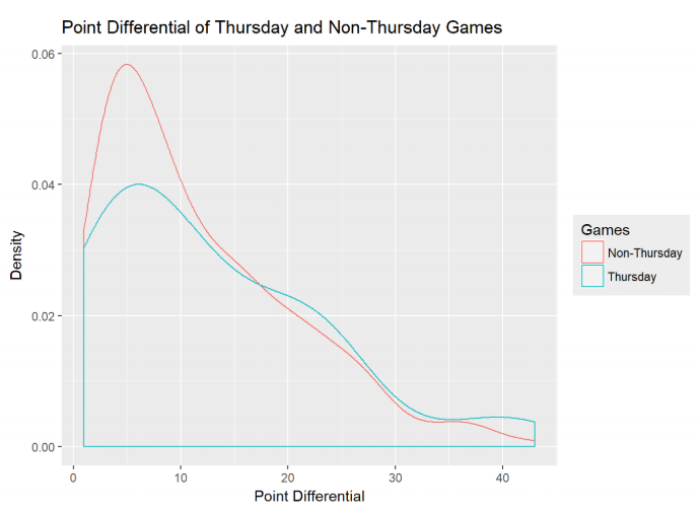
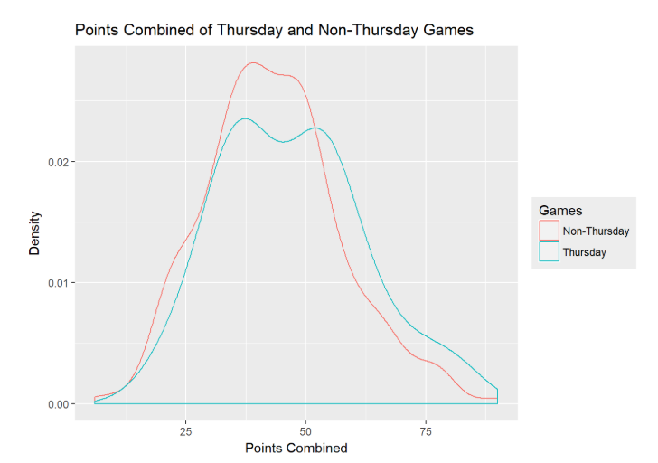
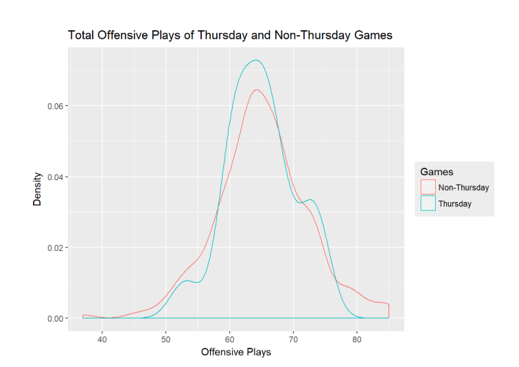
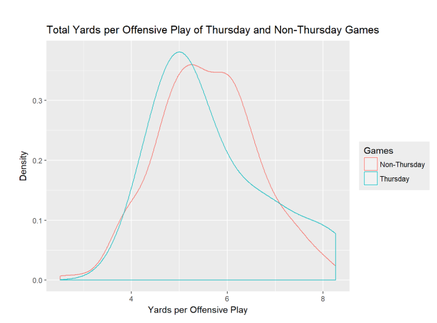
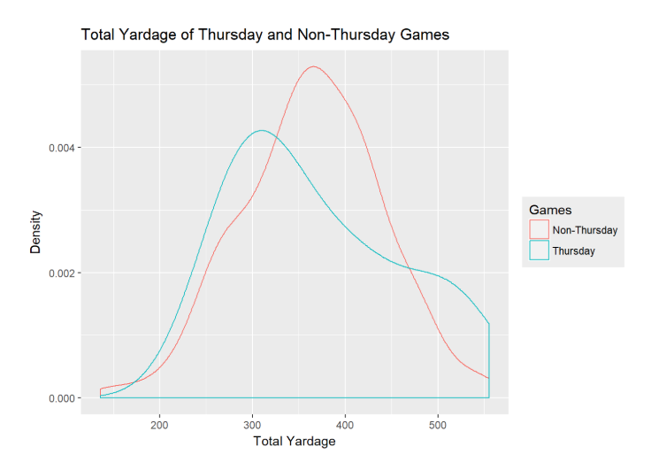

How Good (or Bad) are the Thursday Night NFL Games?
By Joshua Asuncion | June 1, 2018

“Thursday night football should be illegal.” Seahawks wide receiver Doug Baldwin made this comment after a 22-16 Seahawks victory over the Cardinals on a Thursday night last November. He, along with several other of the players, thought it was wrong for the NFL to ask players to participate in Thursday night games. This game in particular was noteworthy as eight players were injured during the game, most notably All-Pro cornerback Richard Sherman who suffered a season-ending injury.
Over the years, the Thursday Night Football brand has gained notoriety, receiving an increasing amount of criticism by fans, players and coaches alike. On social media, fans complain about the games as often being boring, or games being of little consequence to the title chase. The criticism is that the games are lopsided affairs between dominant and cellar-dwelling teams. In fact, the seeming abundance of blowouts once led Sherman to call them a “poopfest.”
This stigma is so persistent in sports culture that when the Rams and 49ers played in a 41-39 Week 3 Thursday night game, in what was one of the most exciting games of the year, the writers at Bleacher Report, Yahoo Sports, and SB Nation were besides themselves. The title of a Yahoo article read: “Surprise, surprise! Rams and 49ers give us a great Thursday night game.”
And for the players and coaches, they often vent to the media how Thursday nights do not give teams adequate time to recover and to plan, given the short turnaround from a Sunday or Monday game. Due to the physical nature of the game, players need time to rest and heal, and an argument can be made that Thursday games are putting players at an increasing risk of injury.
So the general consensus is that Thursday games are worse in terms of watchability. The assumption is that the shorter recovery time leads to less preparation for teams, which leads to sloppier, slower, and more boring gameplay, not to mention the increased likelihood of injuries – if star players are injured and can’t play, then that negatively affects the quality of games.
However, what does the data say about the quality of Thursday games? Are these assumptions be confirmed through analysis of the data, or are they instead shown to be overblown? To quantify the quality of a game, certain beliefs needed to be assumed about what the casual fan finds engaging, namely that:
- Closer games are more entertaining than blowouts
- Games with more offense and more points scored are more entertaining
- Longer sustained offensive drives are more entertaining than quicker three-and-outs
With this philosophy, and having the statistics of every game played in the 2017-2018 NFL season, I decided to focus in on point differentials, points combined, total yardage, offensive plays, and yards per offensive play between Thursday games and non-Thursday games. I’ve chosen to only look at the statistics of winning teams for the sake of simplicity, in addition to the fact that generally the winning teams have more total yardage, offensive plays, yards per offensive play, etc.
Surprisingly, the graphs are pretty similar in structure, with both peaking at around 5 points, and both having virtually the same downward slope. However, it should be noted that past the point differential of 20 points, the density of the Thursday graph is slightly higher than the non-Thursday graph.
Again, the graphs share a similar structure, except this time the Thursday graph peaks in two different places whereas the non-Thursday graph has one peak. On average, non-Thursday games have 43 points combined, while Thursday games have 47 points combined.
Once again, they share an identical shape, except with the non-Thursday graph being slightly more distributed. But both peak around 64 total offensive plays.
A noticeable difference is observed here, with the Thursday graph having a sharp peak of density at 5 yards per offensive play, while the non-Thursday graph has a rounder peak of density from the 5 to 6 yard range.
Finally we are able to observe a substantial difference. Although the Thursday graph has a bigger bulge at 500+ yards, it is right skewed more considerably than the non-Thursday graph, peaking around 300 yards, while the non-Thursday graph peaks at 375 yards. We can observe that the non-Thursday graph is much more dense at the 325 to 450 yard range than the Thursday graph.
Surprisingly, the comparison of point differentials shows that Thursday and non-Thursday games have a near identical distribution, in terms of close games, blowouts, and everything in between. In addition, the comparisons of points combined and total offensive plays don’t provide any more clarity. These support the idea that TNF games are in fact not as bad as everyone makes them out to be.
However, when we start comparing total yardage and yards per offensive play, we are able to see that non-Thursday games do in fact have an edge. Although TNF games are not the constant blowouts or boring affairs they are claimed to be, the data furthers the evidence that Thursday night games are indeed of lesser quality in terms of watchability, compared to Sunday and Monday games.